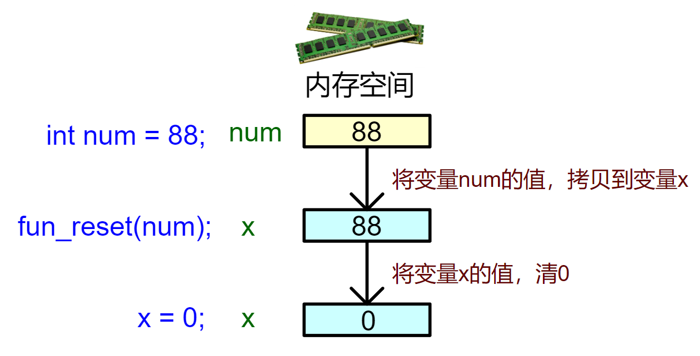
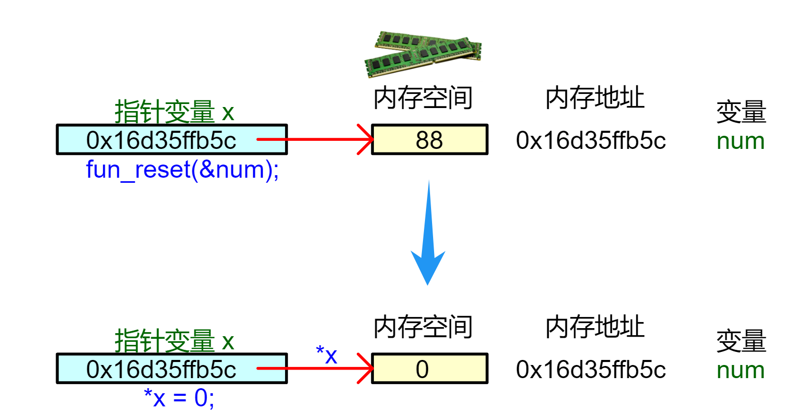
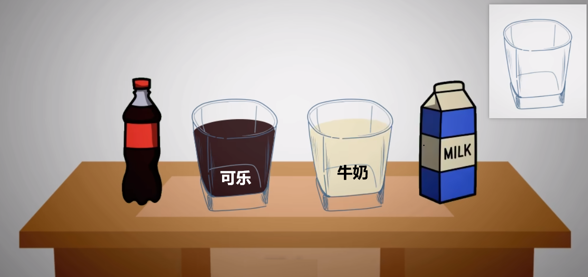

<!DOCTYPE lake>
<h1 data-lake-id="T9SF5" id="T9SF5"><span data-lake-id="u1050f407" id="u1050f407">0&gt; 功能需求</span></h1><p data-lake-id="u514c6405" id="u514c6405"><span data-lake-id="u2b5d8287" id="u2b5d8287">实现一个函数，将外部变量值清零；</span></p><hr/><h1 data-lake-id="jRWrC" id="jRWrC"><span data-lake-id="ue54521f3" id="ue54521f3">1&gt; 方案1：值传递</span></h1><h2 data-lake-id="PYVnV" id="PYVnV"><span data-lake-id="u52dbb1a3" id="u52dbb1a3">1.1&gt; 程序设计</span></h2><span class="yuque-card-unsupported">[codeblock]</span><p data-lake-id="uf45f9f8f" id="uf45f9f8f"><span data-lake-id="u1099a4d6" id="u1099a4d6">运行结果：</span></p><span class="yuque-card-unsupported">[codeblock]</span><p data-lake-id="u8f50f59e" id="u8f50f59e"><span data-lake-id="u1d1c20c1" id="u1d1c20c1">❓❓😮</span><span data-lake-id="uf6fbc27c" id="uf6fbc27c">“为什么 </span><code data-lake-id="u3d82f651" id="u3d82f651"><span class="lake-fontsize-12" data-lake-id="ud89bf4d4" id="ud89bf4d4">fun_reset(num)</span></code><span data-lake-id="u692f6f52" id="u692f6f52"> 没有把 num 变成 0？”</span></p><hr/><h2 data-lake-id="RUwgI" id="RUwgI"><span data-lake-id="u423d6507" id="u423d6507">1.2&gt; 内存示意图</span></h2><p data-lake-id="u41d0aa91" id="u41d0aa91"></p><p data-lake-id="u45123373" id="u45123373"><span data-lake-id="ub0cc5158" id="ub0cc5158">通过画出函数调用时的内存示意图，</span><strong><span class="lake-fontsize-12" data-lake-id="u8bf9e1e5" id="u8bf9e1e5" style="color: #DF2A3F">值传递本质</span></strong><span class="lake-fontsize-12" data-lake-id="u7aa7f72c" id="u7aa7f72c">：</span></p><p data-lake-id="uacd3bc8e" id="uacd3bc8e"><span class="lake-fontsize-12" data-lake-id="ua1dc644c" id="ua1dc644c">将num的值88复制给新变量x</span></p><p data-lake-id="ub6639ada" id="ub6639ada"><span class="lake-fontsize-12" data-lake-id="u23d88ade" id="u23d88ade">类似"复印机操作"：修改复印件不影响原件</span></p><p data-lake-id="u71e525eb" id="u71e525eb"><span class="lake-fontsize-16" data-lake-id="u37871f2a" id="u37871f2a">🐧</span><span data-lake-id="u37b4cb66" id="u37b4cb66">“如果想在函数内修改外部变量num，应该怎么做？”</span></p><hr/><h1 data-lake-id="hZfml" id="hZfml"><span data-lake-id="u80f45a8c" id="u80f45a8c">2&gt; 方案2：指针传参</span></h1><h2 data-lake-id="CMasy" id="CMasy"><span data-lake-id="u1f90d98e" id="u1f90d98e">2.1&gt; 程序设计</span></h2><span class="yuque-card-unsupported">[codeblock]</span><p data-lake-id="u288e357d" id="u288e357d"><span data-lake-id="uc5f59665" id="uc5f59665">运行结果：</span></p><span class="yuque-card-unsupported">[codeblock]</span><hr/><h2 data-lake-id="XAedo" id="XAedo"><span data-lake-id="u4aa7a745" id="u4aa7a745">2.2&gt; 内存示意图</span></h2><p data-lake-id="u9af09c07" id="u9af09c07"></p><p data-lake-id="udf060f5d" id="udf060f5d"><code data-lake-id="uee461408" id="uee461408"><span data-lake-id="u79a39661" id="u79a39661" style="color: #2F4BDA">fun_reset(&amp;num);</span></code><span data-lake-id="uec5577cf" id="uec5577cf">调用时:</span></p><p data-lake-id="uaeed2ee1" id="uaeed2ee1"><span data-lake-id="u010dbd4c" id="u010dbd4c">Step 1&gt; 传递变量num的地址（</span><code data-lake-id="u9f7ad2b8" id="u9f7ad2b8"><span data-lake-id="u520aebac" id="u520aebac">&amp;num</span></code><span data-lake-id="uc360dd57" id="uc360dd57">即</span><code data-lake-id="ue5f526d0" id="ue5f526d0"><span data-lake-id="u0bcbf1f9" id="u0bcbf1f9">0x16d35ffb5c</span></code><span data-lake-id="u03597faa" id="u03597faa">）给指针变量x；</span></p><p data-lake-id="uea863598" id="uea863598"><span data-lake-id="u4107cec0" id="u4107cec0">Step 2&gt;  </span><code data-lake-id="u5cfabeca" id="u5cfabeca"><span data-lake-id="u3c66f36e" id="u3c66f36e" style="color: #2F4BDA">*x = 0;</span></code><span data-lake-id="u1c5e0261" id="u1c5e0261"> 通过num的地址</span><code data-lake-id="ubf168694" id="ubf168694"><span data-lake-id="u2d504de2" id="u2d504de2">0x16d35ffb5c</span></code><span data-lake-id="u8a9dd05d" id="u8a9dd05d">修改num的值；</span></p><p data-lake-id="u38f09389" id="u38f09389"><span data-lake-id="ub3c17773" id="ub3c17773">🚀</span><span data-lake-id="u5a81c236" id="u5a81c236"> 只要能拿到你的地址，想干啥干啥，OK，你已迈向“黑客”第一步！</span></p><hr/><h1 data-lake-id="DdrDY" id="DdrDY"><span data-lake-id="ue460567a" id="ue460567a">🐻</span><span data-lake-id="ue038e51f" id="ue038e51f">实践练习</span></h1><p data-lake-id="ubc994b1b" id="ubc994b1b"><span data-lake-id="u0493824c" id="u0493824c" style="color: #2F4BDA">练习1&gt;</span><span data-lake-id="u88ef9956" id="u88ef9956"> 编写函数 ，将传入的浮点数+10， 并画出内存布局示意图和指针关系图。</span></p><p data-lake-id="u87f50c8d" id="u87f50c8d"><span data-lake-id="uf2ade560" id="uf2ade560" style="color: #2F4BDA">练习2&gt;</span><span data-lake-id="uf5ed0972" id="uf5ed0972"> 编写函数，将下面程序中交换逻辑，封装为独立函数</span><code data-lake-id="u12cb039a" id="u12cb039a"><span data-lake-id="ub4aff214" id="ub4aff214" style="color: #DF2A3F">swap( )</span></code><span data-lake-id="ua504d9e6" id="ua504d9e6" style="color: #000000">， 并画出内存示意图和指针关系图。</span></p><span class="yuque-card-unsupported">[codeblock]</span><p data-lake-id="ue30c50a8" id="ue30c50a8"></p>